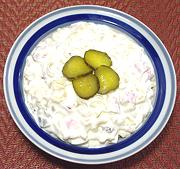

|
Pasta Salad with HamFrance - Salade de Macaroni au Jambon | ||||
| Serves: Effort: Sched: DoAhead: |
5 salad ** 40 min Best |
Simple and easy to make, this salad is astonishingly delicious. Served as a buffet party dish, it is one your guests will not soon forget - make plenty. | |||
|
4 7 2 2 ------ 1-1/2 1/3 4 1/3 1/4 |
oz oz lrg oz --- c c T t t |
Pasta (1) Ham, cooked Eggs Pickles (2) -- Dressing Mayonnaise (3) Cream, heavy Lemon Juice Salt Pepper |
In a dish so simple, quality of ingredients and care with texture are critical. Make - (40 min)
|